特征值方法
给定一 阶方阵
阶方阵 和标量函数
和标量函数 ,有多种方法定义矩阵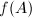.例如,对于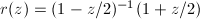及
,有多种方法定义矩阵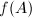.例如,对于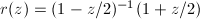及 ,可分别用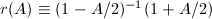及Taylor级数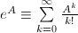来定义.一种较精确而广泛的定义利用线积分:假设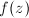在闭曲线
,可分别用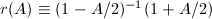及Taylor级数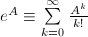来定义.一种较精确而广泛的定义利用线积分:假设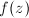在闭曲线 的内部解析,且包围了
的内部解析,且包围了 ,则定义
,则定义 为
为
以上定义可以用来导出的一些实际特性.例如,若有定义,且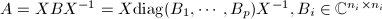,则特别地,当 为Jordan块时,可有如下结果:
为Jordan块时,可有如下结果:

 阶Jordan块.假设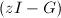非奇异,因为由Cauchy积分定理可知
注意到即知定理成立.
□
阶Jordan块.假设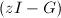非奇异,因为由Cauchy积分定理可知
注意到即知定理成立.
□
以上结果给出了与的特征系统之间的密切联系,但除非能被良态矩阵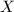对角化,用Jordan标准型处理矩阵函数的数值特性不可靠.
利用Schur分解可避免Jordan分解带来的困难.若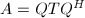是的Schur分解,则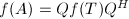.因此,我们需要一个计算上三角阵函数的算法,但因为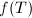的显式表示极其复杂.我们代之以下的算法 (Parlett,1974),用以计算的严格上三角部分,它仅需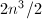个flop.
由,比较方程两边的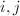元可知i.$$" class="latex-display" width="580" height="49">若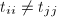,则
由此,在已知对角元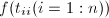后,可逐对角线地递推出的整个严格上三角部分.
但是,以上算法在矩阵有邻近的重特征值时失效.此时可采用其分块形式 (Parlett,1974).第一步在Schur分解中选取恰当的 使得的相同或相近特征值集中在
使得的相同或相近特征值集中在 的对角块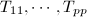中,也即计算分划
其中用特征值排序的算法可以做到这一点.
的对角块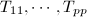中,也即计算分划
其中用特征值排序的算法可以做到这一点.
下一步计算子矩阵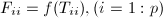,这将用以后阐述的方法.一旦的对角块已知,的严格上三角块也可如下递推算出.仍然比较中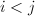的块,则每次要算出的一条块对角线,它可以用之前介绍的Bartels-Stewart算法求解.
逼近算法
在数值计算中,可采用逼近法.其基本思想是若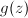在上逼近,则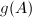逼近.一个逼近矩阵函数的常用方法是Taylor级数,而针对具体函数形式则有更多更好的选择,如可用Pad\'{e}函数逼近.
逼近法中常需计算矩阵的多项式.设 ,最明显的办法是采用Horner的技巧,它需要
,最明显的办法是采用Horner的技巧,它需要 矩阵乘法:.但由于矩阵乘法与数乘性质不同,故更常用以下的算法:
矩阵乘法:.但由于矩阵乘法与数乘性质不同,故更常用以下的算法:
设 为满足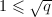的整数,则其中
只要计算出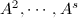,则Horner规则即可应用于上式.的结果可只用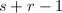次矩阵乘法得到.取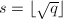时,乘法次数大致最少.
为满足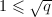的整数,则其中
只要计算出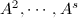,则Horner规则即可应用于上式.的结果可只用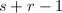次矩阵乘法得到.取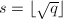时,乘法次数大致最少.
以上计算中,矩阵求幂可采用所谓二进制求幂法.即先计算为的二次幂的展开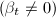,分别计算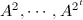将其累积出.这一算法最多需要次矩阵乘法,若是 的幂,则只要次矩阵乘法.
的幂,则只要次矩阵乘法.
矩阵指数
经常要计算的矩阵函数之一是指数计算它的算法有许多,但正如Moler和Van Loan (1978,2003)[1]的综述文章所指出的,它们中的大多数是不可靠的.以下介绍两种算法,它们分别适用于数值计算和精确计算.
Pad\'{e}逼近
考虑如下一类逼近函数,Pad\'{e}函数:其中,
但Pad\'{e}逼近仅在原点才有效.但利用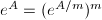可克服这一困难.特别地,若取,则可使求幂的计算十分有效地进行,而整个逼近的好坏取决于的精度.Moler和Van Loan(1978)证明了,若则存在扰动矩阵 满足
其中,由此可以导出Pad\'{e}逼近的精度估计:
参数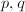可根据要求的相对误差来确定.注意到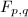大约需要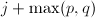次矩阵乘法,故通常令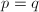,这样就得到以下算法:
满足
其中,由此可以导出Pad\'{e}逼近的精度估计:
参数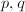可根据要求的相对误差来确定.注意到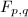大约需要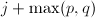次矩阵乘法,故通常令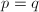,这样就得到以下算法:
 和正数0$" class="latex-inline" style="vertical-align: -1px" width="38" height="13">,计算,其中
和正数0$" class="latex-inline" style="vertical-align: -1px" width="38" height="13">,计算,其中
- 取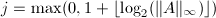,令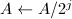.
- 令
 为满足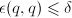的最小非负整数.
为满足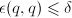的最小非负整数. - 逐项计算出.
- 用Gauss消元法从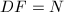中解出.
- 计算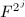
这一算法大约需要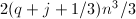个flop,其中特殊的Horner技巧可用于加快 和
和 的计算.相比同样精度的Taylor逼近,Pad\'{e}逼近要减少约一半的计算量.
的计算.相比同样精度的Taylor逼近,Pad\'{e}逼近要减少约一半的计算量.
Putzer方法
若已知矩阵的特征值 (在精确计算中借助其特征多项式得到),则关于矩阵指数有如下定理[2],它给出了一种精确计算矩阵指数的方法:
 而.从而.故得到
□
而.从而.故得到
□